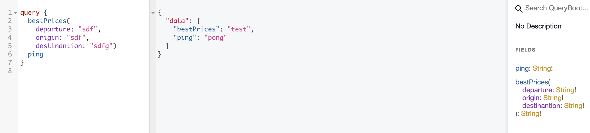

Best Prices
Nesta query, bestPrices, vamos fazer uma consulta a uma API externa que retorna os melhores preços para uma rota (data, origem e destino). Consultaremos a URL de bestPrices da Latam https://bff.latam.com/ws/proxy/booking-webapp-bff/v1/public/revenue/bestprices/oneway?departure=<YYYY-mm-dd>&origin=<IATA>&destination=<IATA>&cabin=Y&country=BR&language=PT&home=pt_br&adult=1&promoCode=, na qual departure é a data de partida no formato ano-mes-dia, origin é o código IATA da cidade ou do aeroporto de origem, destination é o código IATA da cidade ou do aeroporto de destino. Assim, nossa query deve receber 3 argumentos departure, origin e destination e retornar um conjunto de melhores preços, além de lançar erros. Caso estes argumentos não estejam dentro do padrão esperado. Com isso, nosso primeiro passo será implementar a função bestPrices que recebe os 3 argumentos e por enquanto retornará uma String.
Implementando a função básica de bestPrices
Nosso objetivo agora é fazer nosso GraphQL responder da seguinte forma:

A query que usamos é:
query {
bestPrices(
departure: "sdf",
origin: "sdf",
destinantion: "sdfg")
ping
}
E o valor de retorno é:
{
"data": {
"bestPrices": "test",
"ping": "pong"
}
}
O resultado de uma query GraphQL como a que mostamos retorna o campo data que é um mapa contendo os resultados das queries bestPrices e ping. Para resolvermos isso, podemos escrever a seguinte função:
#![allow(unused)] fn main() { // schema/mod.rs // ... #[juniper::object] impl QueryRoot { //... fn bestPrices(departure: String, origin: String, destinantion: String) -> FieldResult<String> { Ok(String::from("test")) } } // ... }
Agora podemos começar a pensar um pouco melhor na organização do nosso código. Na seção de apresentação do livro desenhamos o seguinte diagrama:
api
main
|-> boundaries
|-> web
|-> db
|-> message
|-> controllers/resolvers
|-> adapters
|-> core
|-> business
|-> compute
|-> models/schemas
Com este esquema em mente, vamos ordenar como nossos arquivos ficarão organizados para um projeto GraphQL e exemplificar para onde cada conjunto já existente será movido:
api
main
|-> boundaries
|-> web
|-> db
|-> resolvers
|-> graphql
|-> queries
|-> mutations
|-> internal
|-> adapters
|-> core
|-> business
|-> compute
|-> schemas
|-> graphql
|-> model
|-> db
|-> web
|-> errors
Com esta definição em mente vamos alocar o projeto que contém as rotas e os handlers GraphQL em boundaries/web/handlers.rs, pois este aquivo é responsável pela interface web do projeto. Qualquer módulo de comunicaçnao com banco ficaria em boudnaries/db/, assim como de Kafka ficaria em boudnaries/kafka ou boudnaries/messages. Nosso arquivo schema/mod.rs possui as configurações de resolvers, assim não faz sentido que esteja em schema/, e moveremos ele para resolvers/graphql/, poderiamos separar em queries e mutations, mas como nosso projeto somente conterá 2 queries, não precisamos nos preocupar em extrair para pastas diferentes. Além disso, chamei o que tipicamente é considerado um controller de resolver/internal, por simplicidade, caso prefira chamar de controller esta adequado também. Na pasta schemas vamos adicionar todos os schemas de referência ao GraphQL em schemas/graphql, assim como os de comunicação com o banco em schemas/model/db e de interface web em schemas/model/web. Já os erros de que usaremos para comunicar problemas estarão em schemas/errors. Caso você fique com dúvidas de como ficou a organizacão do código, ela está disponível no commit https://github.com/web-dev-rust/airline-tickets/commit/c33a78cffbd74be49727c744623dcd1e10902cd4.
Validando argumentos
Com a função que implementamos para bestPrices precisamos agora implementar os erros correspondentes, para isso criaremos o módulo schemas/errors.rs e lá implementaremos os erros Graphql. O primeiro erro que vamos implementar é o erro do formato de origin e destination, pois IATAs devem ser 3 letras. Chamaremos esse conjunto de erros de InputError e o erro correspondente ao IATA de IataFormatError:
#![allow(unused)] fn main() { use juniper::{FieldError, IntoFieldError}; pub enum InputError { IataFormatError, } impl IntoFieldError for InputError { fn into_field_error(self) -> FieldError { match self { InputError::IataFormatError => FieldError::new( "The IATA format for origin and destinantion consists of 3 letter", graphql_value!({ "type": "IATA FORMAT ERROR" }), ), } } } }
Agora para usarmos esse erro precisamos modificar a função bestPrices em resolvers/graphql.rs para usar o tipo InputError:
#![allow(unused)] fn main() { use crate::schema::errors::InputError; // ... #[juniper::object] impl QueryRoot { fn ping() -> FieldResult<String> { Ok(String::from("pong")) } fn bestPrices( departure: String, origin: String, destinantion: String, ) -> Result<String, InputError> { if origin.len() != 3 || !origin.chars().all(char::is_alphabetic) { return Err(InputError::IataFormatError); } Ok(String::from("test")) } } //... }
Se formos em localhost:4000/graphql e enviarmos {bestPrices(departure: "IAT", origin: "IATA", destinantion: "sdfg")} (origin com 4 letras) receberemos o campo error com o campo InputError::IataFormatError:
{
"data": null,
"errors": [
{
"message": "The IATA format for origin and destinantion consists of 3 letter",
"locations": [
{
"line": 1,
"column": 2
}
],
"path": [
"bestPrices"
],
"extensions": {
"type": "IATA FORMAT ERROR"
}
}
]
}
O campo destination também é um IATA e precisamos aplicar a lógica iata.len() != 3 || !iata.chars().all(char::is_alphabetic) a ambos os campos, assim vamos criar um módulo de lógica que controlar quando esse erro deve ser lançado. O módulo será core/error.rs:
use crate::schema::errors::InputError;
pub fn iata_format(origin: &str, destination: &str) -> Result<(), InputError> {
if origin.len() != 3
|| !origin.chars().all(char::is_alphabetic)
|| destination.len() != 3
|| !destination.chars().all(char::is_alphabetic)
{
Err(InputError::IataFormatError)
} else {
Ok(())
}
}
Os testes para esta função são:
#![allow(unused)] fn main() { #[cfg(test)] mod iata { use super::iata_format; use crate::schema::errors::InputError; #[test] fn len_should_be_3() { assert_eq!( iata_format("IATA", "IAT").err().unwrap(), InputError::IataFormatError ); assert_eq!( iata_format("IAT", "IATA").err().unwrap(), InputError::IataFormatError ); } #[test] fn only_letters() { assert_eq!( iata_format("IAT", "I4T").err().unwrap(), InputError::IataFormatError ); assert_eq!( iata_format("I&T", "IAT").err().unwrap(), InputError::IataFormatError ); } } }
Nesta função validamos que o formato IATA é respeitado tanto para origin quanto para destination, somente 3 letras. Caso alguma das verificaçnoes falhe, lançamos o erro InputError::IataFormatError. Depois disso, aplicamos a função iata_format em nosso resolver através de um match, que retorna o erro ou executa alguma função interna:
#![allow(unused)] fn main() { use crate::core::error; // ... #[juniper::object] impl QueryRoot { fn bestPrices( departure: String, origin: String, destination: String, ) -> Result<String, InputError> { match error::iata_format(&origin, &destination) { Err(e) => Err(e), Ok(_) => Ok(String::from("test")), } } } }
Próximo passo é determinar se departure é uma data e seu valor é superior ao dia de hoje.
Validando datas
Para trabalharmos com datas precisamos incluir a crate chrono = "0.4.11" no campo [dependencies] do Cargo.toml. A primeira coisa que vamos verificar é se o formato da data está correto. Podemos fazer isso com a seguinte função:
#![allow(unused)] fn main() { use chrono::naive::NaiveDate; // ... pub fn departure_date_format(date: &str) -> Result<(), InputError> { let departure = NaiveDate::parse_from_str(date, "%Y-%m-%d"); match departure { Err(_) => Err(InputError::DateFormatError), Ok(d) => Ok(()), } } }
Com parse_from_str verificamos se o formato da string departure esta correto de acordo com o formatador que passamos "%Y-%m-%d". parse_from_str nos retorna um Result que podemos utilizar para compor o erro. Precisamos incluir um novo caso de erro, DateFormatError em InputError e adicionar sua cláusula no macth. Assim, validamos isso com os testes a seguir:
#![allow(unused)] fn main() { #[cfg(test)] mod date { use super::departure_date_format; use crate::schema::errors::InputError; #[test] fn date_is_correct() { assert!(departure_date_format("3020-01-20").is_ok()); } #[test] fn date_should_be_yyyy_mm_dd() { assert_eq!( departure_date_format("2020/01/20").err().unwrap(), InputError::DateFormatError ); } } }
Próximo passo é verificar se a data de departure data é maior que a data de hoje, para isso podemos utilizar a função signed_duration_since que nos retorna uma Duration desde a data passada como argumento (today). Podemos comparar essa data extraindo o número de dias com num_days e verificar se é maior que 0. Novamente precisamos adicionar um nove erro InvalidDateError em InputError.
#![allow(unused)] fn main() { use chrono::{naive::NaiveDate, offset::Utc}; // ... pub fn departure_date_format(date: &str) -> Result<(), InputError> { let departure = NaiveDate::parse_from_str(date, "%Y-%m-%d"); match departure { Err(_) => Err(InputError::DateFormatError), Ok(d) => { let today = Utc::today(); if d.signed_duration_since(today.naive_utc()).num_days() > 0 { Ok(()) } else { Err(InputError::InvalidDateError) } } } } }
E o teste para esse novo caso pode ser:
#![allow(unused)] fn main() { #[test] fn date_should_be_greater_than_today() { assert_eq!( departure_date_format("2019-01-20").err().unwrap(), InputError::InvalidDateError ); } }
O módulo schema/error.rs fica da seguinte forma:
#![allow(unused)] fn main() { use juniper::{FieldError, IntoFieldError}; #[derive(Debug, Clone, PartialEq)] pub enum InputError { IataFormatError, DateFormatError, InvalidDateError, } impl IntoFieldError for InputError { fn into_field_error(self) -> FieldError { match self { InputError::IataFormatError => FieldError::new( "The IATA format for origin and destinantion consists of 3 letter", graphql_value!({ "type": "IATA FORMAT ERROR" }), ), InputError::DateFormatError => FieldError::new( "departure date should be formated yyyy-mm-dd", graphql_value!({ "type": "DATE FORMAT ERROR" }), ), InputError::InvalidDateError => FieldError::new( "Date should be greater than today", graphql_value!({ "type": "INVALID DATE ERROR" }), ), } } } }
Agora podemos adicionar este novo grupo de erros ao nosso resolver com:
fn bestPrices(
departure: String,
origin: String,
destination: String,
) -> Result<String, InputError> {
match (
error::iata_format(&origin, &destination),
error::departure_date_format(&departure),
) {
(Err(e), Err(e2)) => Err(e),
(Err(e), _) => Err(e),
(_, Err(e)) => Err(e),
_ => Ok(String::from("test")),
}
}
Próximo passo é responder as informações de bestPrices em vez de Ok(String::from("test")).
Respondendo informacões de bestPrices
Para este caso devemos utilizar um cliente HTTP, que usualmente são assíncronos em Rust, porém a crate que estamos utilizando para GraphQL ainda não tem um suporte muito sólido para async/await, e por isso preferi utilizar a crate de cliente HTTP reqwest com o módulo reqwest::blocking, mesmo que actix possua seu próprio módulo de cliente actix_web::client.
Exemplo de client com
actix_web::clientuse actix_web::client::Client; #[actix_rt::main] async fn main() { let mut client = Client::default(); // Cria `request builder` e envia com `send` let response = client.get("http://www.rust-lang.org") .header("User-Agent", "Actix-web") .send().await; // <-Envia o request println!("Response: {:?}", response); }
Conhecendo o endpoint
Consultando o endpoint de best_prices para data "2020-07-21", para origem POA e para destino GRU https://bff.latam.com/ws/proxy/booking-webapp-bff/v1/public/revenue/bestprices/oneway?departure={data}&origin={iata}&destination={iata}&cabin=Y&country=BR&language=PT&home=pt_br&adult=1&promoCode= recebemos o seguinte campos relevantes no Json:
{
"itinerary":{
"date":"2020-07-21",
"originDestinations":[
{
"duration":95,
"departure":{
"airport":"POA",
"city":"POA",
"country":"BR",
"timestamp":"2020-07-21T11:10-03:00"
},
"arrival":{
"airport":"GRU",
"city":"SAO",
"country":"BR",
"timestamp":"2020-07-21T12:45-03:00"
}
}
]
},
"bestPrices":[
{
"date":"2020-07-18",
"available":true,
"price":{
"amount":117.03, "currency":"BRL"
}
},
{
"date":"2020-07-19",
"available":true,
"price":{
"amount":117.03, "currency":"BRL"
}
},
{
"date":"2020-07-20",
"available":true,
"price":{
"amount":117.03, "currency":"BRL"
}
},
{
"date":"2020-07-21",
"available":true,
"price":{
"amount":117.03, "currency":"BRL"
}
},
{
"date":"2020-07-22",
"available":true,
"price":{
"amount":117.03, "currency":"BRL"
}
},
{
"date":"2020-07-23",
"available":true,
"price":{
"amount":117.03, "currency":"BRL"
}
},
{
"date":"2020-07-24",
"available":true,
"price":{
"amount":117.03, "currency":"BRL"
}
}
]
}
Com isso, precisamos modelar a resposta de cada campo para uma estrutura de dados correspondete localizadas em schema/model/web.rs, chamaremos esta estrutura de BestPrices:
#![allow(unused)] fn main() { use juniper::GraphQLObject; use serde::{Deserialize, Serialize}; #[derive(Serialize, Deserialize, Debug, PartialEq, Clone, GraphQLObject)] #[serde(rename_all = "camelCase")] pub struct BestPrices { itinerary: Itinerary, best_prices: Vec<BestPrice>, } #[derive(Serialize, Deserialize, Debug, PartialEq, Clone, GraphQLObject)] #[serde(rename_all = "camelCase")] pub struct Itinerary { date: String, origin_destinations: Vec<OriginDestination>, } #[derive(Serialize, Deserialize, Debug, PartialEq, Clone, GraphQLObject)] pub struct OriginDestination { duration: i32, departure: AirportInfo, arrival: AirportInfo, } #[derive(Serialize, Deserialize, Debug, PartialEq, Clone, GraphQLObject)] pub struct AirportInfo { airport: String, city: String, country: String, timestamp: String, } #[derive(Serialize, Deserialize, Debug, PartialEq, Clone, GraphQLObject)] pub struct BestPrice { date: String, available: bool, price: Option<Price>, } #[derive(Serialize, Deserialize, Debug, PartialEq, Clone, GraphQLObject)] pub struct Price { amount: f64, currency: String, } } }
Para podermos converter o json em uma estrutura de dados Rust vamos precisar utilizar a crate serde e adicionar #[derive(Serialize, Deserialize, Debug, PartialEq, Clone)] em todas as struct anteriores. Além disso, utilizaremos #[serde(rename_all = "camelCase")] para transformar campos snake_case em camelCase, como origin_destinations, e a macro GraphQLObject para indicar que estas structs correspondem a um objeto GraphQL. Agora podemos fazer um request para este endpoint, para isso vamos criar o módulo boundaries/http_out e utilizar o reqwest para fazer um GET no endpoint:
#![allow(unused)] fn main() { use reqwest::{blocking::Response, Result}; pub fn best_prices(departure: String, origin: String, destination: String) -> Result<Response> { let url = format!("https://bff.latam.com/ws/proxy/booking-webapp-bff/v1/public/revenue/bestprices/oneway?departure={}&origin={}&destination={}&cabin=Y&country=BR&language=PT&home=pt_br&adult=1&promoCode=", departure, origin, destination); reqwest::blocking::get(&url) } }
A função best_prices formata a url do request adicionando os parâmetros departure, origin, destination para utilizar a função bloqueante get de reqwest, reqwest::blocking::get(&url). O tipo de retorno é um Result<Response> da própria crate reqwest.
Resolvendo BestPrices
Com a função boundaries::http_out::best_prices fazendo o request, precisamos transformar o resultado desse request em uma estrutura de dados do tipo BestPrices que serializa e implementa GraphQLObject. Para coordenarmos isso, criamos um módulo resolvers/internal que vai implementar a função best_prices_info:
#![allow(unused)] fn main() { use crate::boundaries::http_out::best_prices; use crate::schema::{errors::InputError, model::web::BestPrices}; pub fn best_prices_info( departure: String, origin: String, destination: String, ) -> Result<BestPrices, InputError> { let best_prices_text = best_prices(departure, origin, destination) .unwrap() .text() .unwrap(); let best_prices: BestPrices = serde_json::from_str(&best_prices_text).unwrap(); Ok(best_prices) } }
Note que o resultado da função boundaries::http_out::best_prices é um reqwest::Result<reqwest::blocking::response>, e que para utilizarmos seus dados precisamos tratar como um Result usual, por isso aplicamos unwrap. Além disso, queremos a informação presente no body da resposta, que obtemos como texto utilizando a função text, que retorna um Result, definimos o resultado deste processo como best_prices_text. Com best_prices_text podemos transformar esse texto em uma estrutura BestPrices utilizando a função serde_json::from_str, como em let best_prices: BestPrices = serde_json::from_str(&best_prices_text).unwrap(); e retornar essa infomacão em um Ok. O código ainda possui alguns defeitos como a grande quantidade de unwraps e um InputError totalmente deslocado, logo veremos como melhorar o código neste sentido. best_prices_info ainda não está conectado a nenhuma parte do código GraphQL, assim, precisamos chamar esta função no resolver GraphQL best_prices e mudar seu tipo de resposta para utilizar schema::model::web::BestPrices, Result<BestPrices, InputError.
#![allow(unused)] fn main() { use crate::core::error; use crate::resolvers::internal::best_prices_info; use crate::schema::{errors::InputError, model::web::BestPrices}; use juniper::FieldResult; use juniper::RootNode; pub struct QueryRoot; #[juniper::object] impl QueryRoot { fn ping() -> FieldResult<String> { Ok(String::from("pong")) } fn bestPrices( departure: String, origin: String, destination: String, ) -> Result<BestPrices, InputError> { match ( error::iata_format(&origin, &destination), error::departure_date_format(&departure), ) { (Err(e), Err(e2)) => Err(e), (Err(e), _) => Err(e), (_, Err(e)) => Err(e), _ => best_prices_info(departure, origin, destination), } } } // ... }
Melhorando as mensagens de erro.
O conceito de Input Error é particularmente estranho para erros de conversão de Json com serde ou de request com reqwest, assim, uma possível solução é fazer um "super grupo" de erros, que vou chamar de GenericError, e esse vai possuír um enum chamado InternalError:
#[derive(Debug, Clone, PartialEq)]
pub enum GenericError {
InputError(InputError),
InternalError(InternalError),
}
#[derive(Debug, Clone, PartialEq)]
pub enum InputError {
IataFormatError,
DateFormatError,
InvalidDateError,
}
#[derive(Debug, Clone, PartialEq)]
pub enum InternalError {
RequestFailedError,
ResponseParseError,
}
A próxima mudança que podemos fazer é alterar todos os Result<BestPrices, InputError> para Result<BestPrices, GenericError>, o que causa uma grande quantidade de alarmes em nosso código, mas em vez de arrumarmos cada um dos alarmes e termos mais dor de cabeça, vamos implementar a trait From para dois erros do tipo GenericError::InternalError, reqwest::Error e serde_json::Error, pois estes são os erros que queremos lançar na função esolvers::internal::best_prices_info;. O primeiro erro, reqwest::Error, tem como objetivo retirar o unwrap e o expect da chamada best_prices(departure, origin, destination).unwrap().text().expect(...);, obtendo como resultado best_prices(departure, origin, destination)?.text()?;, que nos ajuda a aproveitar o tipo de retorno GenericError. O mesmo faremos para transformar a chamada de serde_json::from_str(&best_prices_text).unwrap(); em serde_json::from_str(&best_prices_text)?; aplicando a trait From no tipo de erro serde_json::Error:
#![allow(unused)] fn main() { impl From<reqwest::Error> for GenericError { fn from(e: reqwest::Error) -> Self { GenericError::InternalError(InternalError::RequestFailedError) } } impl From<serde_json::Error> for GenericError { fn from(e: serde_json::Error) -> Self { GenericError::InternalError(InternalError::ResponseParseError) } } }
O efeito disso é que o arquivo resolver/internal.rs se torna muito mais simples:
#![allow(unused)] fn main() { use crate::boundaries::http_out::best_prices; use crate::schema::{errors::GenericError, model::web::BestPrices}; pub fn best_prices_info( departure: String, origin: String, destination: String, ) -> Result<BestPrices, GenericError> { let best_prices_text = best_prices(departure, origin, destination)?.text()?; let best_prices: BestPrices = serde_json::from_str(&best_prices_text)?; Ok(best_prices) } }
Com isso, podemos notar que a vida da query bestPrices ficou muito mais simples, pois o match se torna desnecessário, já que as funções error::iata_formate error::departure_date_format retornam um tipo Result<(),InputError>, que é facilmente convertido para um Result<(),GenericError>, nos permitindo utilizar a sintaxe try para elas na query bestPrices, error::iata_format(&origin, &destination)?; e error::departure_date_format(&departure)?;. O arquivo core/error.rs passa a ter a seguinte aparência:
#![allow(unused)] fn main() { use crate::schema::errors::{GenericError, InputError}; use chrono::{naive::NaiveDate, offset::Utc}; pub fn iata_format(origin: &str, destination: &str) -> Result<(), GenericError> { if origin.len() != 3 || !origin.chars().all(char::is_alphabetic) || destination.len() != 3 || !destination.chars().all(char::is_alphabetic) { Err(GenericError::InputError(InputError::IataFormatError)) } else { Ok(()) } } pub fn departure_date_format(date: &str) -> Result<(), GenericError> { let departure = NaiveDate::parse_from_str(date, "%Y-%m-%d"); match departure { Err(_) => Err(GenericError::InputError(InputError::DateFormatError)), Ok(d) => { let today = Utc::today(); if d.signed_duration_since(today.naive_utc()).num_days() > 0 { Ok(()) } else { Err(GenericError::InputError(InputError::InvalidDateError)) } } } } #[cfg(test)] mod date { use super::departure_date_format; use crate::schema::errors::{InputError, GenericError}; #[test] fn date_is_correct() { assert!(departure_date_format("3020-01-20").is_ok()); } #[test] fn date_should_be_yyyy_mm_dd() { assert_eq!( departure_date_format("2020/01/20").err().unwrap(), GenericError::InputError(InputError::DateFormatError) ); } #[test] fn date_should_be_greater_than_today() { assert_eq!( departure_date_format("2019-01-20").err().unwrap(), GenericError::InputError(InputError::InvalidDateError) ); } } #[cfg(test)] mod iata { use super::iata_format; use crate::schema::errors::{InputError, GenericError}; #[test] fn len_should_be_3() { assert_eq!( iata_format("IATA", "IAT").err().unwrap(), GenericError::InputError(InputError::IataFormatError) ); assert_eq!( iata_format("IAT", "IATA").err().unwrap(), GenericError::InputError(InputError::IataFormatError) ); } #[test] fn only_letters() { assert_eq!( iata_format("IAT", "I4T").err().unwrap(), GenericError::InputError(InputError::IataFormatError) ); assert_eq!( iata_format("I&T", "IAT").err().unwrap(), GenericError::InputError(InputError::IataFormatError) ); } } }
Todas essas mudanças nos permitem ainda simplificar a query bestPrices para utilizar os operadores try:
#![allow(unused)] fn main() { #[juniper::object] impl QueryRoot { fn ping() -> FieldResult<String> { Ok(String::from("pong")) } fn bestPrices( departure: String, origin: String, destination: String, ) -> Result<BestPrices, GenericError> { error::iata_format(&origin, &destination)?; error::departure_date_format(&departure)?; let best_price = best_prices_info(departure, origin, destination)?; Ok(best_price) } } }
Note que ainda há um problema envolvendo a trait IntoFieldError que não está implementada para o enum GenericError. Fazemos isso refatorando a implementação da trait para o enum InputError, reaproveitando todos seus campos:
#![allow(unused)] fn main() { impl IntoFieldError for GenericError { fn into_field_error(self) -> FieldError { match self { GenericError::InputError(InputError::IataFormatError) => FieldError::new( "The IATA format for origin and destinantion consists of 3 letter", graphql_value!({ "type": "IATA FORMAT ERROR" }), ), GenericError::InputError(InputError::DateFormatError) => FieldError::new( "departure date should be formated yyyy-mm-dd", graphql_value!({ "type": "DATE FORMAT ERROR" }), ), GenericError::InputError(InputError::InvalidDateError) => FieldError::new( "Date should be greater than today", graphql_value!({ "type": "INVALID DATE ERROR" }), ), GenericError::InternalError(InternalError::RequestFailedError) => FieldError::new( "Could not complete properly request to the backend", graphql_value!({ "type": "REQUEST FAILED ERROR" }), ), GenericError::InternalError(InternalError::ResponseParseError) => FieldError::new( "Could not parse response from backend", graphql_value!({ "type": "RESPONSE PARSE ERROR" }), ), } } } }
Agora que evoluímos os erros da nossa API, podemos fazer a query de recommendations.